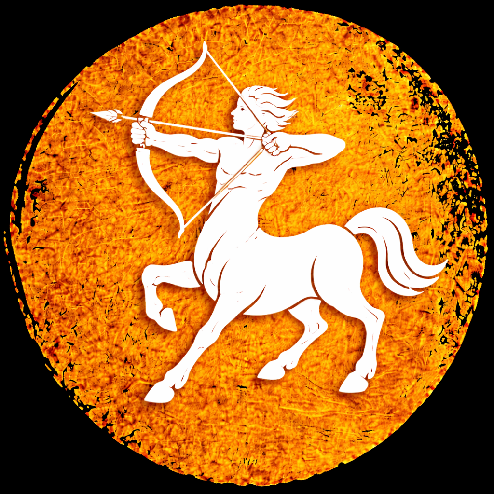
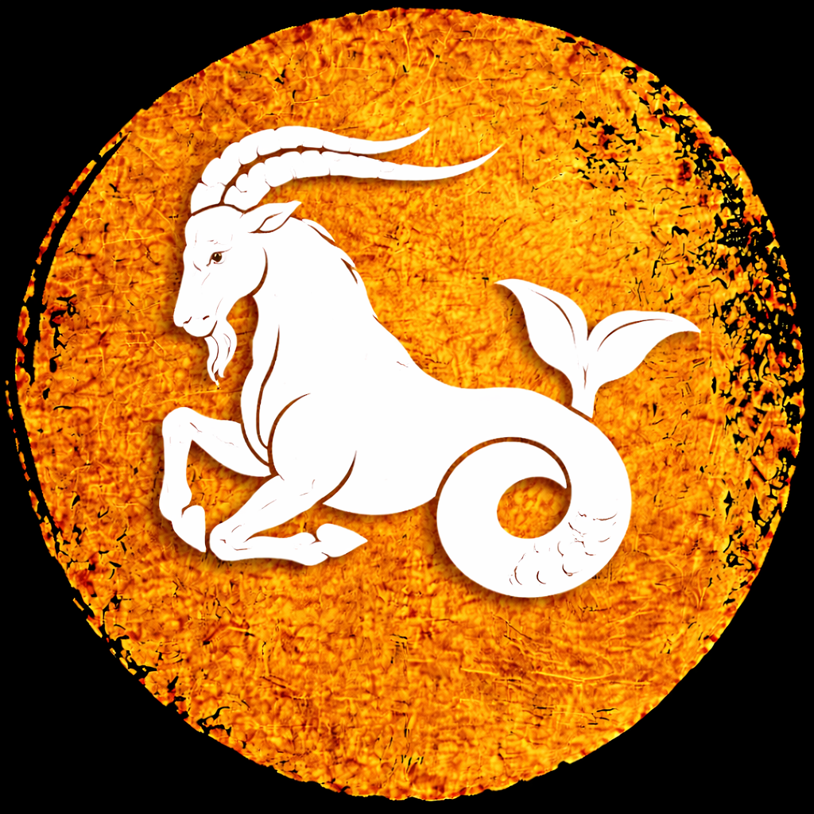
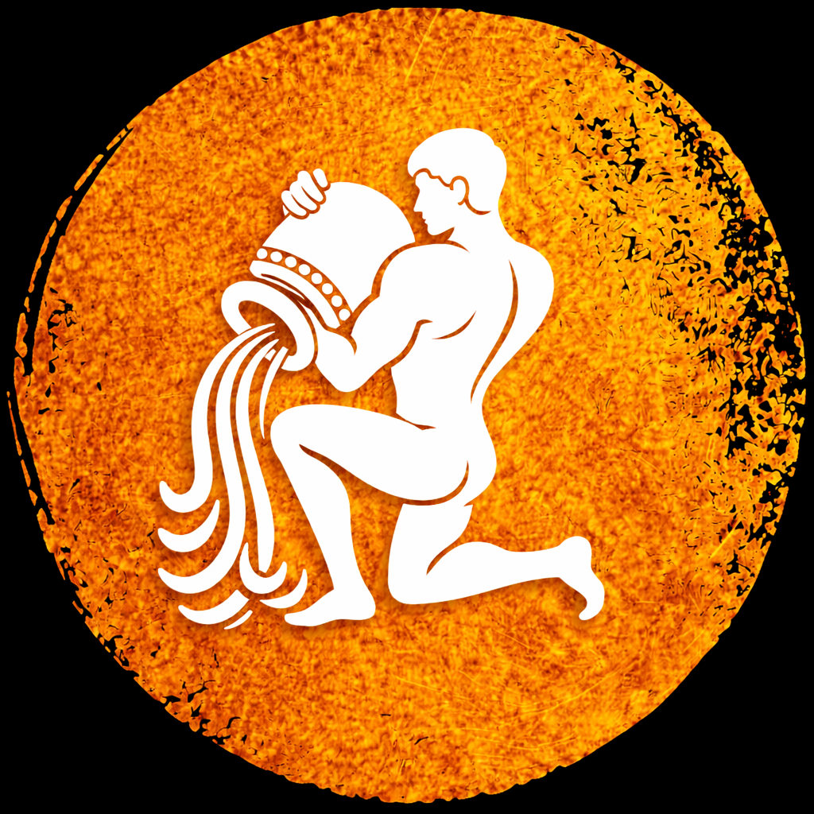

मेष राशि
तत्व: अग्नि | स्वामी ग्रह: मंगल
शुभ रङ्ग: रातो | ९
मेष राशि अगाडि बढ्ने, नेतृत्व गर्ने र साहसी स्वभावको मानिन्छ।
यी व्यक्ति छिटो निर्णय लिने र जोखिम लिन तयार हुन्छन्।
प्रतिस्पर्धा मन पराउने र काम सुरु गर्न ढिलाइ नगर्ने हुन्छन्।
वृष राशि
तत्व: पृथ्वी | स्वामी ग्रह: शुक्र
शुभ रङ्ग: हरियो | ६
वृष राशि धैर्यवान, भरोसायोग्य र भौतिक सुख मन पराउने स्वभावका हुन्छन्।
यी व्यक्ति स्थिरता र सुरक्षा खोज्ने प्रवृत्ति हुन्छ।
उनीहरूमा धैर्य र दृढता हुन्छ, तर कहिलेकाहीं जिद्दी पनि हुन सक्छन्।
मिथुन राशि
तत्व: वायु | स्वामी ग्रह: बुध
शुभ रङ्ग: पहेँलो | ५
मिथुन बोल्न सिपालु, मिलनसार र चतुर हुन्छन्। नयाँ कुरा सिक्न रुचि राख्छन्।
यी व्यक्ति बहुमुखी प्रतिभा भएका र सामाजिक स्वभावका हुन्छन्।
तर कहिलेकाहीं उनीहरूमा अनिश्चितता र सतहीपन पनि देखिन्छ।
कर्कट राशि
तत्व: अग्नि | स्वामी ग्रह: चन्द्र
शुभ रङ्ग: सेतो | २
कर्कट भावनात्मक र परिवारमुखी हुन्छन्। सम्बन्धलाई धेरै महत्व दिन्छन्।
यी व्यक्ति संवेदनशील र समर्पित हुन्छन्, तर कहिलेकाहीं उनीहरूमा चिडचिडापन पनि देखिन्छ।
सिंह राशि
तत्व: अग्नि | स्वामी ग्रह: सूर्य
शुभ रङ्ग: सुनौलो | १
सिंह आत्मविश्वासी र प्रभावशाली हुन्छन्। नेतृत्व लिन मन पराउँछन्।
यी व्यक्ति उदार र रचनात्मक हुन्छन्, तर कहिलेकाहीं उनीहरूमा अहंकार पनि देखिन्छ।
कन्या राशि
तत्व: पृथ्वी | स्वामी ग्रह: बुध
शुभ रङ्ग: निलो | ५
कन्या व्यवस्थित र विश्लेषण गर्ने स्वभावका हुन्छन्। विवरणमा ध्यान दिन्छन्।
यी व्यक्ति व्यावहारिक र बुद्धिमान हुन्छन्, तर कहिलेकाहीं उनीहरूमा आलोचनात्मकता पनि देखिन्छ।
तुला राशि
तत्व: वायु | स्वामी ग्रह: शुक्र
शुभ रङ्ग: गुलाबी | ६
तुला सन्तुलित र न्यायप्रिय हुन्छन्। सम्बन्ध राम्रो राख्न जान्ने।
यी व्यक्ति सौन्दर्य र शान्ति मन पराउने, तर कहिलेकाहीं उनीहरूमा निर्णय लिनेमा कठिनाई पनि देखिन्छ।
वृश्चिक राशि
तत्व: जल | स्वामी ग्रह: मंगल
शुभ रङ्ग: गाढा रातो | ९
वृश्चिक गहिरो सोच र दृढ इच्छाशक्ति भएका हुन्छन्। गोपनीय स्वभाव।
यी व्यक्ति भावनात्मक र वफादार हुन्छन्, तर कहिलेकाहीं उनीहरूमा ईर्ष्या र बदला लिने प्रवृत्ति पनि देखिन्छ।
धनु राशि
तत्व: अग्नि | स्वामी ग्रह: बृहस्पति
शुभ रङ्ग: बैजनी | ३
धनु आशावादी र स्वतन्त्र हुन्छन्। यात्रा र ज्ञान मन पराउँछन्।
यी व्यक्ति खुला विचार र उदार हुन्छन्, तर कहिलेकाहीं उनीहरूमा बेवास्ता र असावधानी पनि देखिन्छ।
मकर राशि
तत्व: जल | स्वामी ग्रह: शनि
शुभ रङ्ग: खैरो | ८
मकर मेहनती र अनुशासित हुन्छन्। ढिलो तर निश्चित सफलता।
यी व्यक्ति जिम्मेवार र व्यावहारिक हुन्छन्, तर कहिलेकाहीं उनीहरूमा निराशावादी र कठोरता पनि देखिन्छ।
कुम्भ राशि
तत्व: जल | स्वामी ग्रह: शनि
शुभ रङ्ग: आकाशी | ४
कुम्भ नवीन सोच र सामाजिक भावना भएका। नयाँ विचार मन पराउने।
यी व्यक्ति स्वतंत्र र मानवीय हुन्छन्, तर कहिलेकाहीं उनीहरूमा विचित्रता र अलगाववाद पनि देखिन्छ।
मीन राशि
तत्व: जल | स्वामी ग्रह: बृहस्पति
शुभ रङ्ग: समुद्री निलो | ७
मीन संवेदनशील र कल्पनाशील हुन्छन्। कला र आध्यात्मिक झुकाव।
यी व्यक्ति दयालु र सहानुभूतिपूर्ण हुन्छन्, तर कहिलेकाहीं उनीहरूमा भ्रम र अवास्तविकता पनि देखिन्छ।